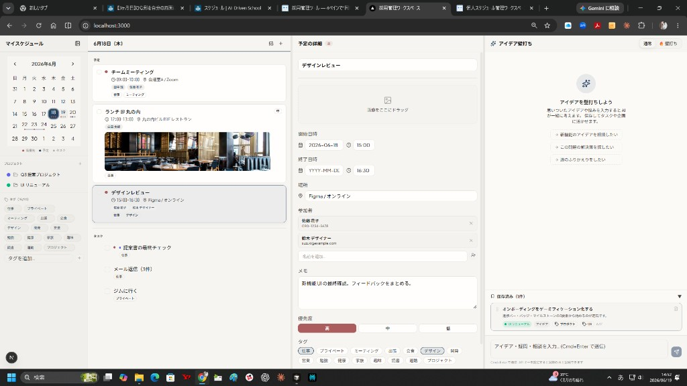

個人スケジュール管理
4ペインワークスペース
フェーズ1の実装機能と工夫した点、そして今後のフェーズ2計画を一枚で整理します。
スケジュールとタスク管理が同時にできることで、
単にやらないといけない事や予定をこなすだけで
時間が奪われ、そこから解放された時に、
仕事の本流、いわゆるクリエーティブな時間に
戻りやすくすることを目的に作ったアプリです。
1日の時間の使い方が変わる
実際の画面と、各ペインの機能をひとつずつ見ていきます。
実際の画面（Windows）

カレンダー・プロジェクト・タグ
優先度別・複数ドット表示
同じ日に複数の予定があっても統合せず、最大3個まで個別のドットで表示。優先度の高い順（赤→青→グレー）で並ぶ。
複数日イベントを横線バーで表示
出張・旅行など連続する予定は色ドットではなく、カレンダー上で横線が繋がって表示される。
プロジェクト管理
プロジェクトを自由名称で作成。クリックで P3 に詳細（概要・目標・期限・画像・URL）を表示し、インラインで直接編集できる。
グローバルタグクラウド
最大20個まで自由入力でタグを作成。予定・タスク・アイデアすべてに共通のタグを付けて横断管理できる。
今日の予定 & タスク
現在時刻リアルタイム表示
「今日」の隣に日本時間の HH:MM を1分ごとに自動更新。等幅フォントで数字がずれない。
高優先度の赤マーカー
優先度「高」の予定には赤い点マーカーを表示。一目で重要度が伝わるデザイン。
完了チェック＋取り消し線
チェックボックスで完了にすると取り消し線と透明度低下で「完了感」を演出。削除せず残る。
画像ドラッグ＆ドロップ添付
予定・タスクのカード上に画像ファイルをドロップすると、添付されてサムネイル表示される。
タスクをプロジェクトへD&D
タスクカードをドラッグして P3 のプロジェクト詳細にドロップすると、自動的に紐付けられる。
コピー・複製
予定・タスクのカードをワンクリックで複製。定例会議の登録などに便利。
参加者の自動補完（コンタクトマスタ）
一度入力した人の名前と連絡先（メール/電話）を自動的に記憶。次回から名前を入力すると連絡先が自動入力される。アプリ独自のコンタクトデータベースとして機能する。
詳細表示 & インライン編集
P3 はクリックしたその場で編集できる「インライン編集」を全フィールドに採用。モーダルや「編集ボタン」は一切使わず、シームレスに情報を更新できる。
選択した種類によって表示が切り替わる
プロジェクト詳細はD&Dの受け口になる
プロジェクト詳細を P3 に表示した状態で、P2 のタスクカードや P4 のアイデアカードをドラッグしてドロップすると、自動的にプロジェクトに紐付けられる。X ボタンで解除も可能。
アイデア壁打ち — 管理から創造へのブリッジ
P2 でタスクを片付けたあと、そのままの画面で P4 のアイデア壁打ちへ移行できる。「こなす仕事が終わったら、すぐクリエーティブな時間に入れる」という設計思想の中核。
調べもの・文章生成・アイデア出しに使う。APIキーを設定すると実際のAI（OpenAI等）と接続できる。
アイデアを5つの質問で深掘りする、ビジネスアイデアの具体化に特化したモード。
保存済みアイデア → P3 でクリック編集
AI との会話を保存すると下部リストに一覧表示される。カードをクリックすると P3 にアイデア詳細が表示され、内容の修正・プロジェクト紐付け・タグ付けができる。カードをドラッグすると P3 のプロジェクトへ紐付けも可能。
工夫した技術ポイント
ドラッグ&ドロップの2層設計
同じカードで「画像ファイルのドロップ（カードへの添付）」と「要素のドラッグ（プロジェクトへの紐付け）」の2種類が共存。dataTransfer.types でファイルか要素かを判別して衝突を回避している。
モーダルなしのインライン編集
「鉛筆ボタン式」や「モーダルポップアップ式」を使わず、フィールドをクリックした瞬間に入力できる UX を全フィールドに徹底。InlineTextField プリミティブを共通化。
カレンダードット: Context + カスタムDayButton
react-day-picker の DayButton をカスタマイズし、React Context 経由で「日付→ドット配列」の辞書を渡す設計。30日分すべてのセルに対して O(1) で色・個数を参照できるため、予定が増えても描画が重くならない。
意味的カラートークンによるテーマ管理
bg-blue-500 のような色番号は一切使わず、bg-primary 等のトークンのみ使用。フォントは Noto Sans JP + Plus Jakarta Sans の組み合わせで日本語の可読性を高めた。
フェーズ2 ロードマップ
フェーズ1はブラウザ内ローカルで動作する完全なプロトタイプを構築した。フェーズ2では「クラウド化・外部連携・AI実接続」の3本柱で実用レベルに引き上げる。
フェーズ1の現在の制約（フェーズ2での解消ポイント）
バックエンド & 認証の基盤整備
最優先Google カレンダー連携
Google Calendar API（OAuth）でイベントを双方向同期。このアプリで作成した予定が Google カレンダーにも反映される。
外部メッセージ連携（Chatwork / Gmail）
Chatwork API または Gmail API（Route Handler 経由）でメンション・重要メールを P2 下部に表示。API トークンを Supabase Secrets に保管して安全に管理。
実 AI 接続（OpenAI / Gemini / Claude）
現在モック応答の P4 に実際の AI API を接続。/api/chat Route Handler を作成し、ストリーミングで文字が流れるリアルタイム UX を実現。壁打ちモードは会話履歴を context に含めた連続対話に進化させる。
UX 仕上げ & デプロイ
「こなす時間を最小化して、
クリエーティブな時間を最大化する」
4つのペインが1画面に並ぶことで、カレンダー・タスク・詳細・アイデアの間をアプリを切り替えることなく移動できる。管理業務から解放されたあと、そのままの画面でクリエーティブな思考へ移行する — それがこのアプリの本質的な価値。